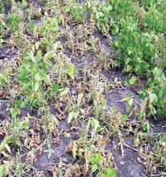

| Home |
| SOYBEAN |
| Major Diseases |
| 1. Dry root rot |
| 2. Wilt |
| 3. Leaf Spot |
| 4. Mosai |
| Questions |
| Download Notes |
SOYBEAN WilT DISEASE
Wilt - Fusarium oxysporum f. sp. tracheiphilum
Symptoms
Symptoms do not appear until the plants are about six weeks old. Initially a few plants are noticed with pale green flaccid leaves which soon turn yellow. Growth is stunted, chlorosis, drooping, premature shedding or withering of leaves with veinal necrosis often occurs and finally plant dies within 5 days. Brownish, purple discoloration of the cortical area is seen, often extends throughout the plant.
|  |  |
|
Symptoms |
||
Pathogen
The fungus produces falcate shaped macroconidia which are 4-5 septate, thin walled and hyaline. The microconidia are single celled hyaline and oblong or oval. The chlamydospores are also produced in abundance.
Favourable conditions
Temperature of 20-25˚C and moist humid weather.
Disease cycle
The fungus survives in the infected stubbles in the field. The primary spread is through soilborne chlamydospores and infected seeds. The secondary spread is through conidia by irrigation water.
Management
- Treat the seeds with Carbendazim or Thiram at 2 g/kg or treat the seeds with Trichoderma virideat 4 g/kg.
- Spot drenching with Carbendazim at 0.5 g/litre.